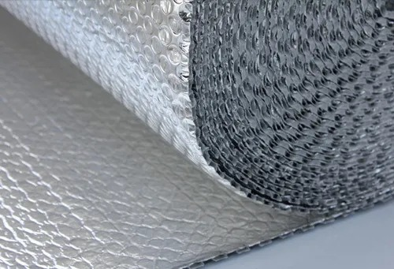

열반사 단열재(Reflective insulation / Radiant Barriers)는 저방사 시트라고도 합니다.

열반사 단열재는 복사열 차단효과가 아주 좋고 외단열에서 냉방에 효과가 있어 특히 더운지방에서 효과적이라고 합니다.
BENEFITS OF LOW-E INSULATION
·Increases energy savings
·Non-toxic, no fiberglass – no itching
·Excellent vapor barrier
·Installs easily with razor knife and foil tape
·Superior thermal performance
·Flexible and durable
·Improves insulation system performance
·Insect/Bird resistant
·Great for new construction or retrofits
·Reflects up to 97% of radiant heat
·Helps Deaden Sound
가벼운 롤상 제품으로 작업이 용이하고 제품의 크기가 1m × 13m로 연결부가 최소화되어 '열교 (Thermal Bridge)'부위가 최소화된다고 강조합니다.
또한 표면재가 알루미늄으로 우기에도 장시간 노출과 시공이 가능하고 방습층 시공이 불필요하다는 장점도 가지고 있습니다.
다만, 일부에서는 "열반사단열재(저방사)는 복사열 차단효과는 크나 열전도율을 감소시키지는 않는다"고 하고 다른한편에서는 "열반사단열재의 경우 공기층이나 포일이 깨지면 열저항값은 0"이 된다고 우려의 목소리를 전하기도 합니다.
안정된 단열성능으로
경시변화가 없는
가등급
EPS 준불연 단열재
DK보드
준불연 가등급 EPS 단열재 DK보드
건축용 / 외단열용 / 판넬용
문의 1855-2240